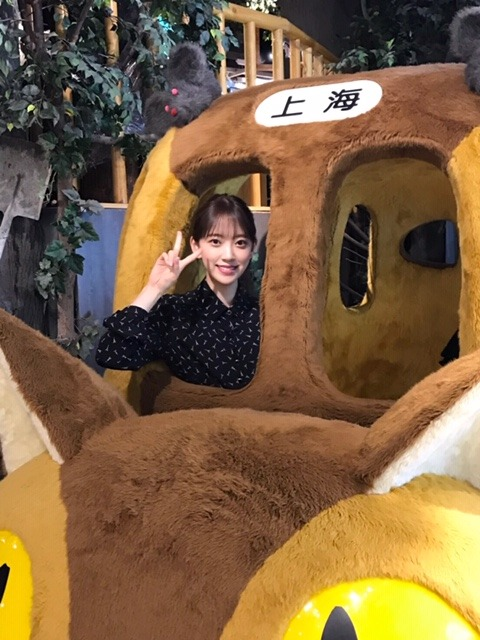
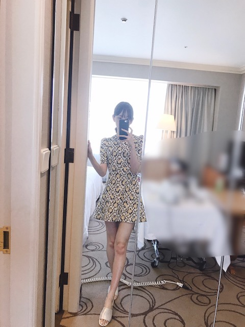
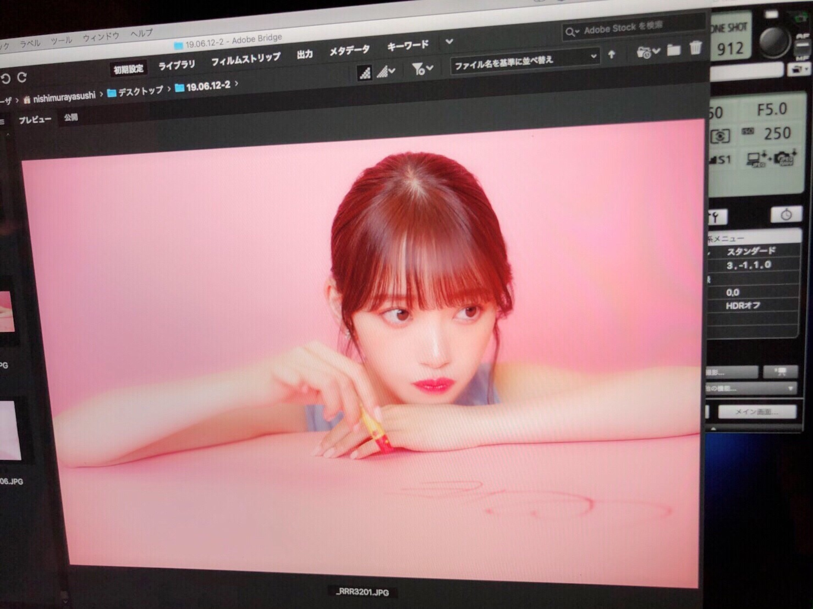
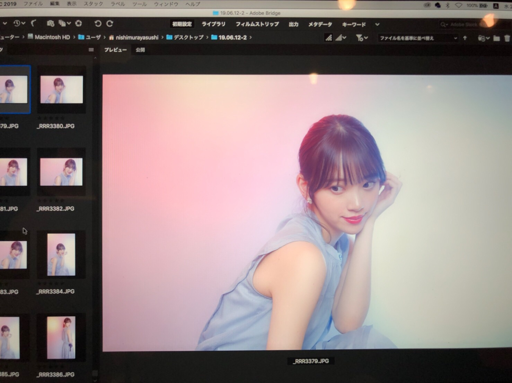

2019/0709Tue三度寝したい
玲香さんの卒業発表がありました。
正直、めちゃくちゃ寂しいです。どんどんメンバーが居なくなってしまうのは、心にぽっかり穴が空いたようで。
でも、玲香さんの次なる道を応援したいし玲香さんが決めたことだからわたし達メンバーが前向きな気持ちで背中を押さないと。ね。
9.1が最後ということでそれまでたくさん玲香さんの背中を見ていろんなことを吸収したいし一緒に思い出も作りたいです。
大好きだからこそ、残された私達が前向きに、強く居ないと。
玲香さん、最後までよろしくお願いします（ ; ; ）
最高のキャプテンです！
上海の思い出写真載せますね
焼き餃子とか焼き小籠包とか北京ダックとか
たくさん食べましたー。

one-piece...saint laurent
shoes...3.1 Phillip Lim

韓国で買ったワンピース
かわいい形のワンピースを夏はたくさん着たいなあ
ロマンティック気分で過ごしたい
この間メイクさんにね、
みおなちゃんは絶対前世どこかの国のお姫様だったよね
といわれたので
あ、わがままなのがバレてしまったと思ったら
まさかの
"品があるからだよ"と言っていただいたんです
最高の褒め言葉
う、うれしい、、、
確かにね、異常にお茶や紅茶が幼い頃から好きで食器や茶葉にもこだわっていたし、しかもなぞに丁寧に淹れて飲むのにもこだわっていたし、紅茶のおともはクッキーだし、読む本は外国の物語のが好きだし、やはりどこかマイペースというかわがまま気質だし、パジャマの質とかわいさにこだわりが強くて季節毎にコロコロ違うの着たがるし、でもなんだかんだシルク素材のパジャマが好きだし、今はプライベートスプーンズクラブのパジャマを1年くらい愛用してるし、姿勢とナイフフォークの使い方だけは昔から褒められるし、ドレスやキラキラのアクセサリーやティアラやヒールやバッグが大好きだし、白馬に乗った王子様がいつか私を迎えにきてくれると信じているから(みんなにはまた始まったよといわれるけど言い続けます)
前世かそのまた前世は、小さな自然豊かな国のお姫様だったらいいなぁ うふ ウフフ
女の子は一度はプリンセスに憧れるよね！


そういえば、質問受け付けておいてまだこたえられてなかった！
オフができたらバーッとこたえます！！
しばらく待たせちゃうかもです...
ごめんなさい...
では、またね☺︎
私は撮影行ってきまーす
ちょい寒いけど田舎で空気が綺麗なので生き生きとしてます。
2019/07/09 20:12


コメント(356)
玲香ちゃんの卒業発表あったね！
僕もびっくりしちゃったよ玲香ちゃんは自分らしいキャプテンを貫いててあのお嬢様のような感じでメンバー皆を見守っててそんな玲香ちゃんだからこそ出来たキャプテンだったのかなと思うよ。まあ確かにメンバーがどんどんいなくなって行くから寂しさはあるよねでもメンバーそれぞれが決めたことだから応援したいな！
ホットギミックを見て来たよとても良かった。未央奈の演技にも惹かれる所があってどんどん世界観に吸い込まれていったよ可愛い未央奈がいっぱい見れたから満足です。
上海のは国際映画祭の時のかな？まさか！千と千尋の神隠しのパネルがあるとは案外日本の映画も世界に知られているのかもね
それから、未央奈ワンピース似合っているね黒のは清楚感が合っていい感じ、柄はなんて言うのかな？袖の所に何かあるの可愛い
メイクさんが行ってること分かる気がする未央奈の前世がお姫様の所確かに品があるよね～～所作と言いますか行動と言いますか全てにおいて出ているよね品がある感じが、ふとした瞬間とかそう感じる所あるよ！そういう時その人の生き様が出るって言うよね！ なんかこうやって思い返して行くと未央奈が段々雲の上の存在みたいに感じて来たよ。まあ、こういう品がある所も僕が好きな所の一つなんだけどね！要するに今のままで突っ走って行こうぜ！！
またまた長々と書き過ぎてしまいましたここまで読んで頂き感謝の言いようがございません。ありがとうございます。
では！未央奈～世界一愛しているよ。
真夏の全国ツアー名古屋会場お疲れ様。
真夏の全国ツアーが始まったから夏が来たって感じ!！
これから暑くなってくるから熱中症には気を付けてね。
玲香ちゃんの卒業発表は僕も寂しかったし、最初ブログ見た時はとても辛い気持ちだった……
質問!!
真夏の全国ツアー名古屋会場での思い出は？
では、またねー
堀ちゃん、大好きだよー
3部からやったけど5部まで忙しいなか笑顔でありがとう！やっぱり握手は楽しいなと。猿(バニラアイスやっけ？)との握手新鮮すぎたー。やっぱセンスの塊よね（笑）
頑張れ！
頑張れ末央奈ちゃん！悲しい時には笑顔を作る！
今でもお姫様のようにファンたくさんいるけど！
キャプテンの卒業は本当に悲しいね…
乃木坂がまだ0に近い時からずっとグループをまとめて引っ張ってくれた存在だったから、いなくなることすら考えれない。
でも、れいかちゃんも堀ちゃんたち後輩の姿を見て「もう大丈夫だな」って安心できたから次のステージへ旅立つ決心ができたんだと思う。それすらも後輩たちの道しるべになるようにっていう、どこまでもメンバー思いな理由なんだけどね
残り本当に少ない期間、約8年間「乃木坂46」を「キャプテン」として支えてきた桜井玲香さんの背中をしっかり目に焼き付けて、それを堀ちゃんが3期4期につないで行けるようにできたらいいね！
あとたくさん思い出残して！
全てにおいて悔いのないように！
メンバーが卒業するの辛いよね。
ワンピースかわいいよ！
これからもたくさん応援するよ！
体調には気をつけてね
みんなずっと居てほしいけどねー
未央奈は相変わらず可愛い！！
癒しです！
チャァオ～～!☆彡
みおちゃん❕笑顔・・・
その、みおちゃんの～～～⤴️⤴️・・
ワガママがぁ～～～⤴️⤴️
格別にいいんじゃ～⤴️⤴️ん❕❤️❤️❤️❤️❤️笑顔
濃くがあってぇ～～⤴️⤴️・・・
味があって、とってもいいじゃ～⤴️⤴️ん❕❤️❤️❤️❤️❤️笑顔
☆大人しい、おすまし！より☆彡
精一杯応援させてくださーい！
ワンピース姿がめっちゃかわいい❤️
未央奈ちゃんはまだまだ乃木坂にいて大大活躍してほしいなと思います。応援してます。
玲香キャプテン卒業、ファン一同戸惑っています、でもメンバーがのほうが戸惑ってるよね。
神宮で応援します。
今日のショットも最高！猫バス、ワンピースかわいいよ。
堀ちゃんがワガママ？私はそうは思わないな、堀ちゃんは芯がしっかりしていてブレない、そんなイメージだけどね。
言いたいことをしっかり言う、それがワガママという変なイメージになってるんじゃないかな？
堀ちゃんは今も姫だし前世も後世もきっと姫だよ(笑)姫＝ワガママではないよ。姫のように上品で綺麗という意味。
質問の答え期待するよー！
撮影頑張れー！無理しすぎはダメよ。
じゃね。
キャプテンの卒業発表には僕もビックリしました…
僕も昨日はポカーンとしてました…
それと、遅くなってもたけどホットギミック見てきました！！
最高だった！！！！
未央奈の女優力凄いと思いました！！
その後、いつのまにかここにいるも見たよー！！
感動しっぱなしだった！
全ツも続くけど体調に気を付けて頑張ってねぇ！
乃木坂46を引っ張ってきた玲香さんがいなくなるのは本当に悲しいけど最後のライブ最高の形でおくれるといいね。
残り数ヶ月玲香さんといい思い出作ってね。
キャプテンの卒業発表、メンバーやっぱり寂しいですよね。
私もとても寂しいです。
でも、これからも乃木坂とれいかのことも応援します。
どんなに変わっても、やっぱ乃木坂だな！
未央奈、これからも頑張ってください！
キャプテンの卒業寂しいねー
キャプテンのラストステージが最高の物になるよう未央奈ちゃんも頑張ってね！
暑いし忙しいと思うけど体調に気を付けて頑張って下さい！
未央奈ちゃんの前世がお姫様だった説は、
自分もそう思います
そう、センスがとにかく上品だし、
オーラと雰囲気が絶対お姫様っぽいと前から思ってました
キャプテンの卒業は寂しいけど、未央奈ちゃんも気を落とさず乃木坂の国のお姫様としてグループを支えて欲しい思って応援してます❗
１・2部とお邪魔したのですが、未央奈ちゃんとの握手が3年ぶりで少し緊張してしまったよ
その時はまだ乃木坂46を知ったばかりでしたが『未央奈ちゃんにはバラエティでも期待しているよ』
って伝えました。で、この前は
『やっぱりバラエティでの未央奈ちゃん面白いからまた出てね』と。
本意ではないのかもしれないけど、真面目に不思議な答えをだしてしまったりする姿を見ると微笑ましいので元気が出ます
握手会でも最後に可愛いガッツポーズもらえたんで、また出演番組をチェックしますね。
３年前の握手では『乃木坂の活動より個人仕事に期待しているよ』って捉えられていないかとずっと考えていたのですが心のつかえがとれた気がします、ありがとう。
未央奈ちゃんの握手は競争率高いですがまた行けるよう頑張ります！
わっさー！
この間京都の個握行きました！
可愛すぎて元気もらえました！！
福岡のライブ楽しみにしてまふ
未央奈は色んな一面があって大好きです
私は未央奈さんとはだいぶ歳が違うけど、
『あんな気持ちあったなー』と思えるシーンもありました。
誰もがどこかで当てはまる部分があると感じました。
未央奈さんの演技、素敵でした！
未央奈のその気持ちはキャップは凄く嬉しいと思うよ！
卒業は悲しいことじゃなく、素晴らしい事だといつも思ってるから僕らも全力で応援しないとね！
上海の餃子食べてみたいな…やっぱり本場は違うのかな？
桜井玲香は最高のキャプテン………間違いなく今の乃木坂を作った人だからこそグループの事や自分の事を考えての決断だと思う……淋しいけど背中を押してあげなきゃね
残りの時間玲香ちゃんと最高の思い出作ってね
乃木坂大好きだ～
足がとーっても美しいです
キャプが卒業発表したのは悲しいことやけどこれから乃木坂を引っ張っていく1人として頑張ってね！
応援してます
ホットギミック 見たよ〜
初ちゃんの恋模様と成長の様子が沁みる映画でした！
未央奈の演技がとても上手でびっくりしました笑
キャプテンの卒業発表は急過ぎてびっくりした！
次期キャプテン誰と言われても想像出来ないくらいやっぱり乃木坂のキャプテンは玲香だよなとしみじみ感じたけど自分で決めた事ならそれを応援してあげたいよね
上海の思い出写真ありがとう
未央奈は本当に美味しそうに食べるから好き
ワンピース似合ってるよ
全ツ続くけど体調気をつけてね
質問1!
未央奈は最近何のホラー映画観た？また何を観る予定？
ちなみに俺は貞子を観て今度現代版チャイルドプレイ観に行くよ
質問2!
未央奈は握手会でどんな事を言われたら嬉しい?
玲香ちゃんの件、私も残念です。もう2～3年頑張ってくれるかと思っていました。アイドルはいつか卒業するものなので、しょうがないですね。残されたメンバーも、特に1,2期生は後輩を引っ張って行く自覚があると思うので、今まで以上に頑張る機会が増えると思います。もう夏の全ツの間しか一緒できないので、見たり聞いたり、たくさん学びましょう。
お姫様か～。日本だと雅子妃殿下になりますね。現実的には、逆にわがままが言えない立場になります。私は自由な一般市民が良いです。
ではまた。
中国での写真ありがとう\(๑´ω`๑)/
可愛いよー(^-^)
みおちゃんが前世お姫様だったの何となく納得できるなー＼(^o^)／
だってほんとに綺麗だし可愛いもん笑
暴走も可愛いよ笑
福岡のトゥモロー⊿
ブログの更新ありがとうございました。
昨日は桜井玲香キャプテンの卒業発表にショックをおさえきれず、未央奈ちゃんと同じで、心にぽっかり穴が空いて、放心状態でした。まだあんまり、気持ちの整理がついていません、すみません、気持ちの切りかえが遅いもので…。
でも、未央奈ちゃんが玲香さんの事を、最高のキャプテンとブログで言ってくれた事に少し元気が出ました、ありがとう。
上海、楽しかった様で何よりです。
あとお姫様の話～お姫様と聞くと自分はドラゴンクエストを連想します。未央奈ちゃんはいざという時に剣を持って戦う美しくも、勇敢なお姫様、といったイメージがありますね～。
撮影頑張ってくださーい
それではまた
品があるから絶対前世お姫様！！
いつもありがとう！
前世お姫様だったんだ〜
姫未央奈事、堀未央奈ちゃん
ブログ更新ありがとう⁉︎(^ ^)
多分姫って金華山のお城の姫だったのでは⁇
あっ西洋のお姫様が良かったかな⁇笑
ワンピース姿可愛すぎ〜〜(^ ^)
ドキドキするね〜〜⁉︎
質問の答えを待ってるね〜〜⁉︎
明日はレコメン楽しみおな〜〜⁉︎(^ ^)
先日京都で握手会参加しました。めっちゃ顔小ちゃくて可愛いて、勉強頑張れって言ってくれたので今勉強頑張れています！！また、握手会行きますね笑
ほんと可愛いかった
てか、ほんと卒業発表は寂しいけど応援しなきゃですよね。
撮影の話楽しみにしてます。
自分はいま北海道出張で快適な1週間です。
もっと玲香ちゃんのパフォーマンスを見たかったし、玲香ちゃんが一生懸命に頑張っている姿を見ると自分も頑張らなきゃと思って勇気が湧きます！
これから9.1の神宮まで乃木坂46としての活動を楽しんで最後は笑って卒業して欲しいです！
___________________________________________________
未央奈ちゃんホットギミック今更だけど観ました！
表現力が豊かで劇中の世界に入り込みました！
観た後の余韻が残ってます(笑)
もう一回絶対観に行きます！
全ツ頑張ってください！
未央奈ちゃん、足細いー！ちゃんと食べてる？
夏場は未央奈ちゃんに似合いそうな服がいっぱいあるよね！
たまには夏バテ防止に岐阜に帰省しても良いかもね
コメントする